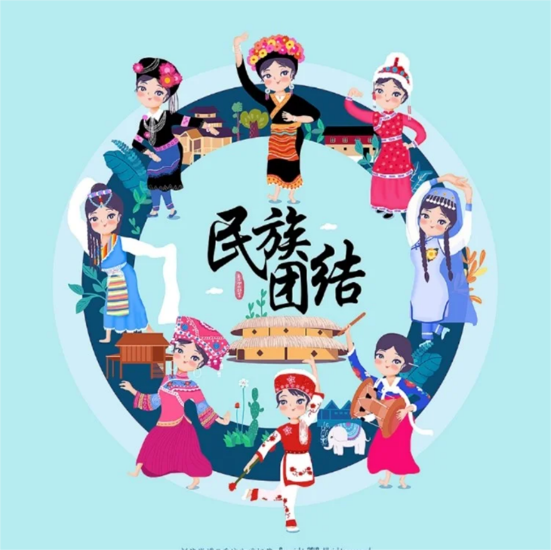
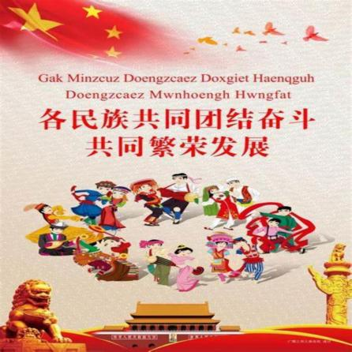
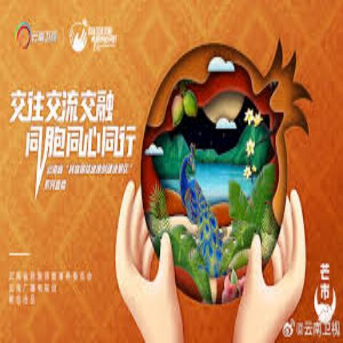
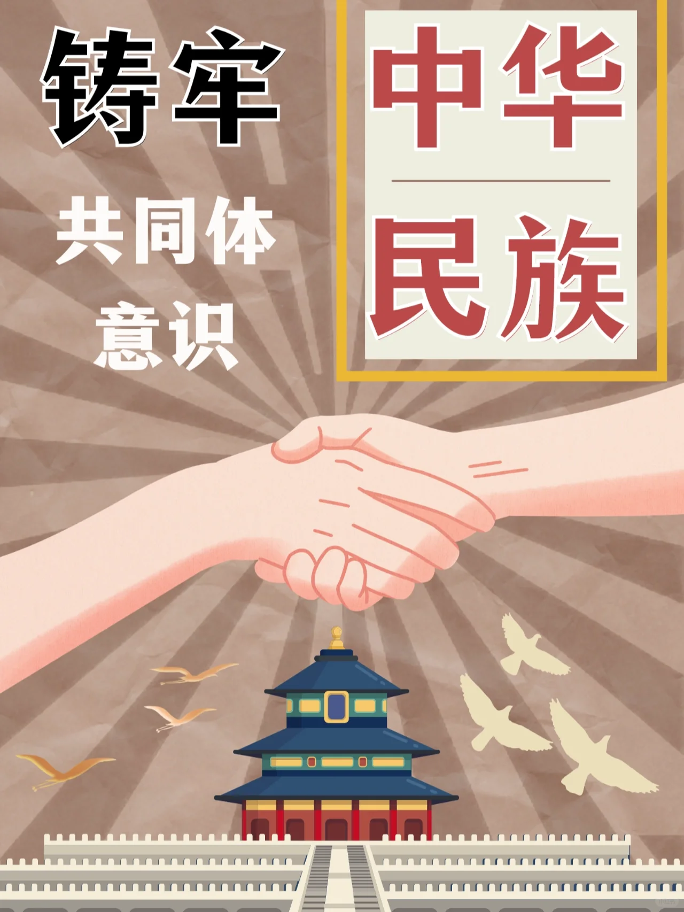
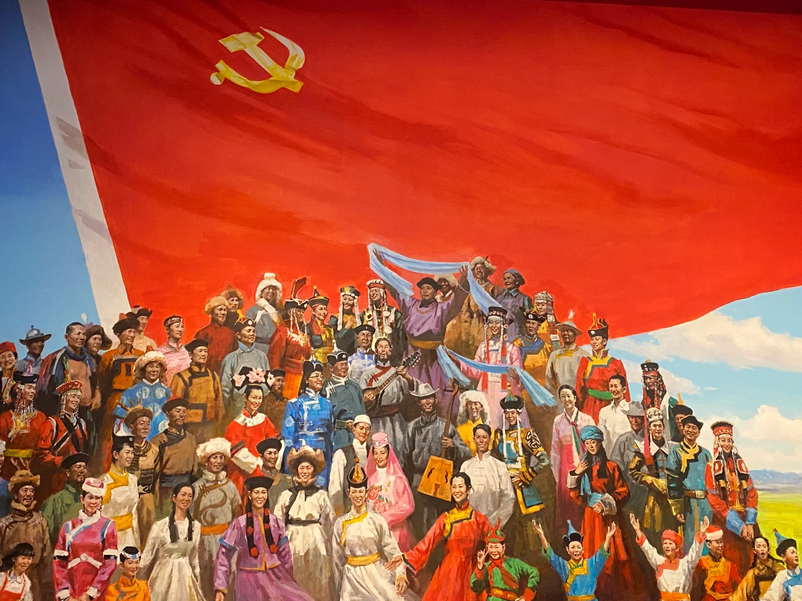
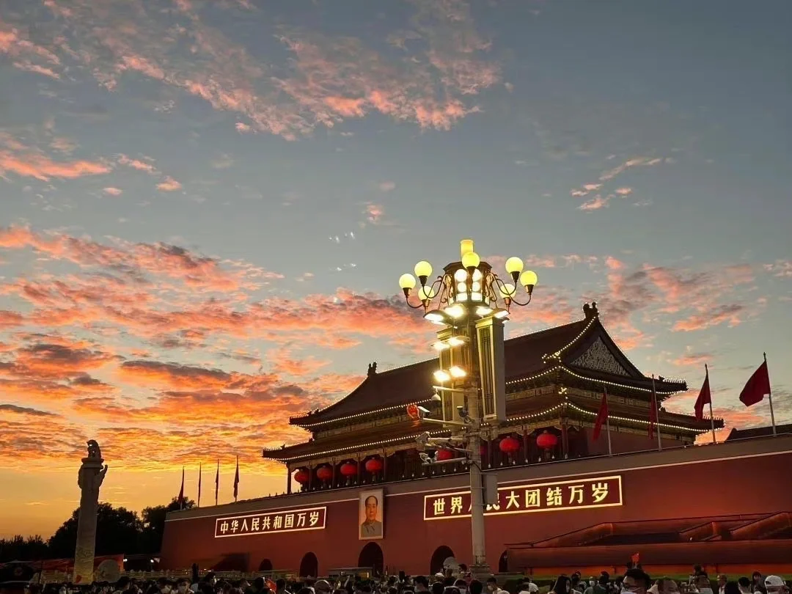

中华优秀传统文化
中华优秀传统文化是中华民族的精神命脉
中华优秀传统文化是中华文明的智慧结晶和精华所在，是中华民族的根和魂，是我们在世界文化激荡中站稳脚跟的根基。
——2022年5月27日，习近平在中共中央政治局第三十九次集体学习时的讲话
以时代精神激活中华优秀传统文化的生命力
要推动中华优秀传统文化创造性转化、创新性发展，以时代精神激活中华优秀传统文化的生命力。要把坚持马克思主义同弘扬中华优秀传统文化有机结合起来，坚定不移走中国特色社会主义道路。
——2021年3月22日至25日，习近平在福建考察时的讲话
以鲜明的中国特色、中国风格、中国气派屹立于世
中华优秀传统文化是中华民族的文化根脉，其蕴含的思想观念、人文精神、道德规范，不仅是我们中国人思想和精神的内核，对解决人类问题也有重要价值。要把优秀传统文化的精神标识提炼出来、展示出来，把优秀传统文化中具有当代价值、世界意义的文化精髓提炼出来、展示出来。
——2018年8月21日至22日，习近平在全国宣传思想工作会议上的讲话
文化
是民族生存和发展的重要力量是中华民族的“根”和“魂”
习近平总书记强调：“没有中华文化繁荣兴盛，就没有中华民族伟大复兴。”
党的十九届五中全会《建议》提出：“传承弘扬中华优秀传统文化”。
传承弘扬中华优秀传统文化，是推进社会主义文化强国建设、提高国家文化软实力的重要内容。
传承弘扬中华优秀传统文化，必须坚持创造性转化、创新性发展。
党的十九届五中全会《建议》提出：“传承弘扬中华优秀传统文化”。
传承弘扬中华优秀传统文化，是推进社会主义文化强国建设、提高国家文化软实力的重要内容。
传承弘扬中华优秀传统文化，必须坚持创造性转化、创新性发展。
民族团结是我国各族人民的生命线，中华民族共同体意识是民族团结之本。
铸牢中华民族
-

民族团结：
我国是统一的多民族国家，民族团结是各族人民的生命线。 -

共同发展：
一滴水只有汇入大海才能获得永久的生命，一个民族只有融入祖国大家庭才能得到永续的发展。 -

交往交流交融：
民族交往交流交融是促进民族团结、培养中华民族共同体意识的关键。 -
.png)
民族文化：
文化是一个国家、一个民族的灵魂。 文化兴国运兴，文化强民族强。
弘扬中华优秀传统文化
1.中华优秀传统文化是推进新时代中国发展的突出优势。
2.大力弘扬中华优秀传统文化必须坚持与社会实践相结合。
3.大力弘扬中华优秀传统文化应当处理好几个重大关系。
铸牢中华民族共同体意识
铸牢中华民族共同体意识，就是要引导各族人民牢固树立休戚与共、荣辱与共、生死与共、命运与共的共同体理念。
要全面贯彻党的二十大部署，准确把握党的民族工作新的阶段性特征，把铸牢中华民族共同体意识作为党的民族工作和民族地区各项工作的主线，不断加强和改进党的民族工作，扎实推进民族团结进步事业，推进新时代党的民族工作高质量发展。
要全面贯彻党的二十大部署，准确把握党的民族工作新的阶段性特征，把铸牢中华民族共同体意识作为党的民族工作和民族地区各项工作的主线，不断加强和改进党的民族工作，扎实推进民族团结进步事业，推进新时代党的民族工作高质量发展。


